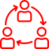
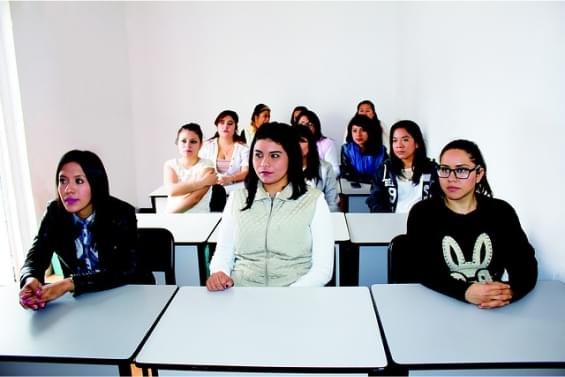
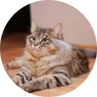

Открыт набор в группы по изучению немецкого языка на уровнях А1 - С1
Поможем подтянуть уровень немецкого для учёбы, работы и путешествий!
Школа немецкого языка "Deutsch"
Наша школа образована в 2015 году. Основной целью наших курсов является помощь в развитии разговорных навыков и свободного владения немецким языком. Чтобы начать пользоваться разговорным немецким, вам потребуется всего месяц.
Так как на наших групповых и индивидуальных занятиях изучения языка 80 % всего времени делается упор на разговорную практику, и только 20 % - на теоретическую часть.
Школа “DEUTSCH” в Костроме - это

Разговорная практика
Удобный график
Умеренные цены
Быстрый результат
Немецкий язык для любых целей
Немецкий язык для начинающих
Наши преподаватели помогут Вам начать говорить по-немецки, научат не бояться языка и понимать немецкую речь на слух.
Подготовка к экзаменам
Помощь в подготовке к ОГЭ, ЕГЭ, а также к международным экзаменам для получения сертификатов Test DaF, Goethe-Zertifikat, DSH.
Профессиональный немецкий
Поможем улучшить Ваш уровень немецкого языка, что откроет для Вас новые профессиональные возможности.
Индивидуальные и онлайн занятия
В нашей школе Вы можете заниматься индивидуально с преподавателем в любое удобное для Вас время. Так же мы проводим онлайн-уроки. После прохождения любого выбранного курса и сдачи экзамена, Вы получаете сертификат.

Групповые занятия любого уровня
Занятие проходят в небольших группах 3-5 человек 2 раза в неделю. Есть дневные и вечерние группы, а также возможность взять дополнительные индивидуальные занятия.
Для воплощения наших амбициозных задач и достижения целей мы пригласили лучших преподавателей, имеющих высшее профильное образование, опыт работы более 7 лет и владеющих современной методикой преподавания иностранных языков.
Для того, чтобы обучение проходило максимально эффективно, мы разработали специальную методику, основой которой являются классические методы преподавания традиционной школы и инновационные подходы коммуникативного обучения.
Ответы на Ваши вопросы
Каждый уровень групповых курсов длится 16 недель.
Длительность индивидуальных курсов и курсов для подготовки к экзаменам Вы определяете индивидуально с преподавателем.
Стоимость зависит от выбранного курса.
Полный прайс-лист Вы можете получить по электронной почте или на наших страничках в социальных сетях.
Да, в нашей школе Вы можете оформить рассрочку и оплатить курс частями.
Групповые занятия начинаются по мере набора группы. Набор в группы производится каждые две недели.
Время индивидуальных занятий Вы с преподавателем определяете самостоятельно.
Чтобы записаться на занятия, Вам нужно заполнить простую форму регистрации на нашем сайте. Вам на почту будет отправлен тест на определение уровня языка, после прохождения которого Вас пригласят на бесплатное тестовое занятие, чтобы подобрать для Вас подходящую группу.
Начните учить немецкий в школе “DEUTSCH”!
Уровень А1
12 000 руб.
Курс для тех, кто никогда не сталкивался с немецким языком и хочет изучить его с нуля
Уровень А2
15 000 руб.
Курс для продолжающих после получения уровня А1, а также для тех, кто пытался выучить немецкий в школе или самостоятельно
Отзывы наших студентов
Добрый день! Хотел бы поблагодарить Deutsch и в частности моего преподавателя Артёма Воскресенского за то, что он в самые короткие сроки подготовил меня к сдаче экзамена TestDAf на хорошие оценки.

Егор Смирнов
Очень довольна как методикой подачи материала, так и подходом преподавателя к занятиям.
Алина Белова
Занятия проходили в очень серьезной и мотивирующей обстановке, но в то же время не были напряженными и изматывающими. Мне понравилось!
Андрей Иванов
Занятия проходили в очень серьезной и мотивирующей обстановке, но в то же время не были напряженными и изматывающими. Мне понравилось!
Виктория Андреева
Добрый день! Хотел бы поблагодарить Deutsch и в частности моего преподавателя Артёма Воскресенского за то, что он в самые короткие сроки подготовил меня к сдаче экзамена TestDAf на хорошие оценки.
Илья Викторов
Очень доволен как методикой подачи материала, так и подходом преподавателя к занятиям.

Добрый день! Хотел бы поблагодарить Deutsch и в частности моего преподавателя Артёма Воскресенского за то, что он в самые короткие сроки подготовил меня к сдаче экзамена TestDAf на хорошие оценки.